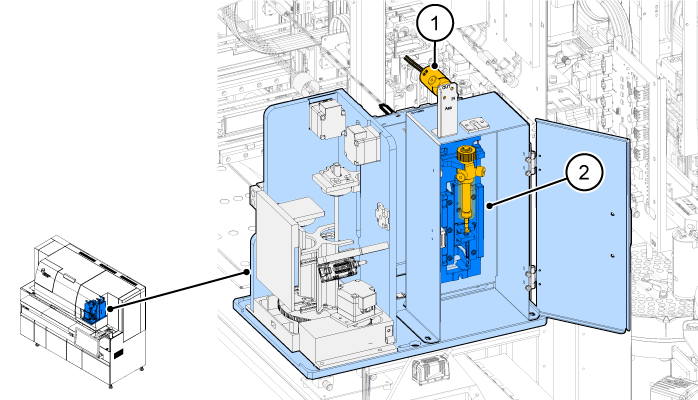

Operating Principles for the Substrate Module
This topic includes information about the theory of operation, or operating principles, for the substrate module.
| Table of Contents |
|---|
| Function |
| Location |
| Overview of Operation |
| Differences From DxI 600/800 |
Function
The purpose of the substrate module is to transfer substrate reagent from a substrate bottle to the reaction vessel in the wash wheel.
The substrate module includes the substrate loader, dMCC, cables and fluidics (including the pump assembly, valves, and tubing).
Location
The substate module is located above the reagent storage module (RSM).

| 1 | Substrate module |
Overview of Operation
The following steps describe the operational process for the substrate module.
-
The user loads a bottle of substrate into the system by placing a bottle of substrate into the module and pressing the button.
-
The door closes and the internal barcode reader is triggered.
-
The software user interface updates the substrate to display the new bottle’s lot number and expiration date.
-
The new bottle is rotated from the load position to the in-use position.
-
The probe assembly lowers and seals the bottle.
-
The customer initiates a test request, and the assay is processed.
-
The reaction vessel (RV) moves to the substrate dispense location in the wash wheel.
-
The aspirate valve opens, and the syringe fills with 200uL of substrate.
-
The aspirate valve closes and the dispense valve opens.
-
The syringe dispenses substrate into the RV.
-
The wash wheel camera takes a photo of the substrate in the RV. The image is checked for accuracy.
-
With each dispense, the volume remaining in the bottle is tracked and updated.
-
If prompted, the user will load a new bottle of substrate.
Component Locations and Functions
The following illustrations and tables describe substrate module component locations and functions.

| 1 | Substrate valve |
| 2 | Substrate loader pump and syringe assembly |
Differences From DxI 600/800
The following list describes how the DxI 9000 substrate module is different from the module in the DxI 600/800.
-
The DxI 9000 has an integrated barcode reader. The DxI 600/800 has a handheld barcode reader.
-
The DxI 9000 substrate reagent has a shorter incubation period than the LumiPhos that’s used in the DxI 600/800.
-
The DxI 9000 has 2D barcodes, whereas the DxI 600/800 has 1D barcodes.
-
The DxI 9000 has a button-activated door that is mechanically driven by a motor. The DxI 600/800 has a pneumatic door that is driven by a pressure valve.
-
DxI 9000 has one door on the substrate loader. The DxI 600/800 has two doors.
-
The DxI 9000 has process monitoring with machine vision.
-
The DxI 9000 substrate module has two sets of two-way valves. The DxI 600/800 has one three-way valve.
-
The AU pump on the DxI 9000 is easier to service and is more reliable.
-
The DxI 9000 uses dispense heating, which has better thermal performance and smaller drawback compared to the DxI 600/800.
-
The DxI 9000 uses a smaller amount of reagent volume than the DxI 600/800.
-
The DxI 9000 uses an active seal with a check valve to permit a certain amount of ambient air into the substrate bottle.